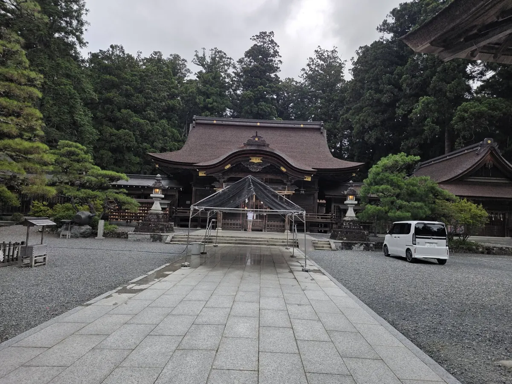
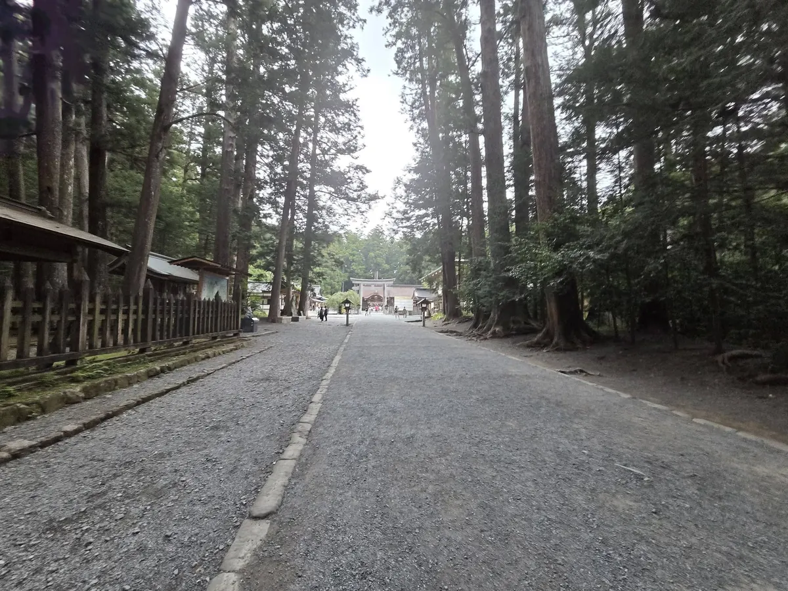
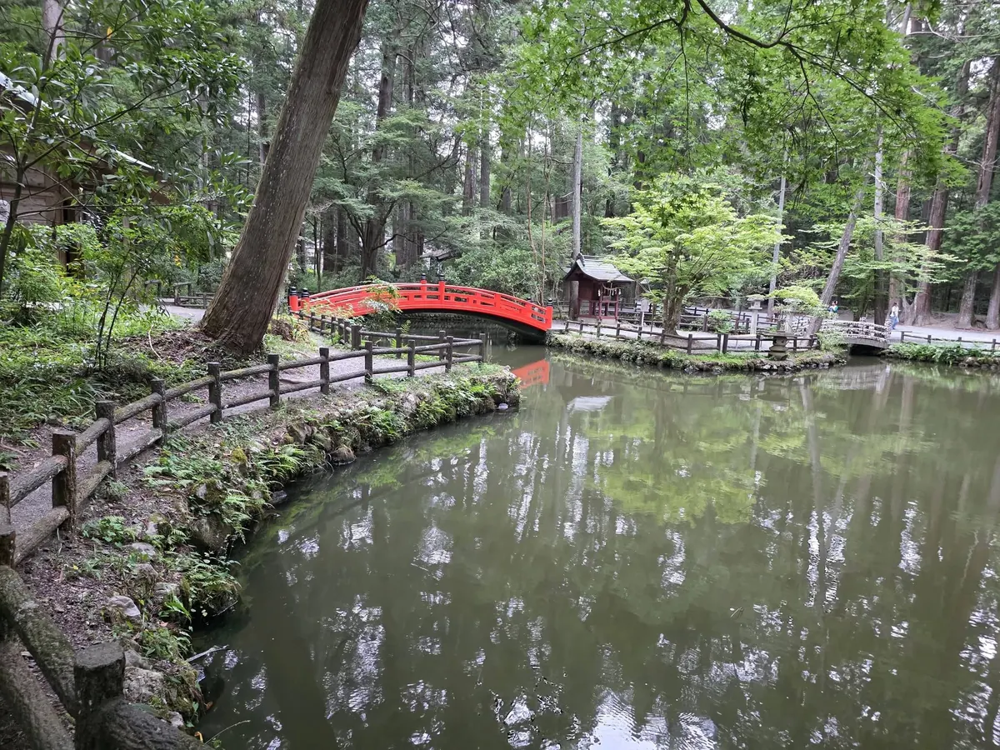
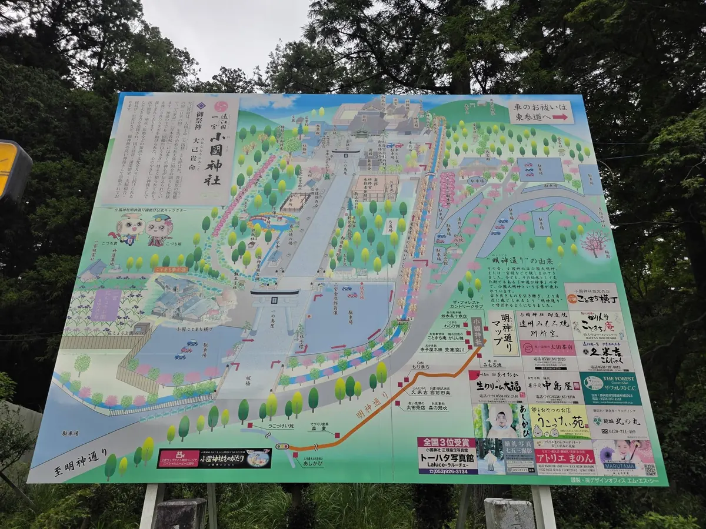

森町・小國神社完全ガイド｜由緒・見どころ・参拝

小國神社は静岡県周智郡森町一宮に鎮座し、遠江国一宮として親しまれる神社です。御祭神、社殿、鎮守の森、舞楽や田遊びを別々の見どころとして消費せず、公式の説明を読み、祈りと継承の場を尊重して参拝する順序をまとめます。
1. 参拝前の結論：由緒、境内、行事、交通を別々に確認する
初めて訪れる人が先に知りたい結論は、小國神社が「観光施設の営業時間」だけで理解できる場所ではないことです。神社公式サイトには、御祭神と由緒、歴史、境内・施設、祭典・行事、参拝の作法、交通案内が分かれて掲載されています。検索結果の短い説明文だけで済ませず、目的に合う公式ページを開きます。
通常の参拝、祈祷、祭典の観覧、花や紅葉、初詣では必要な確認が異なります。通常参拝なら境内案内と作法、祭典なら当年の日程と観覧、季節の来訪なら開花や混雑、初詣なら年末年始の交通や授与を確認します。一つの古い記事に全部を依存しません。
小國神社は一宮地区にあります。最寄りの鉄道駅名、バス路線名、車のインターチェンジが分かっても、境内入口までの最終区間、帰りの便、駐車の当日案内が自動的に決まるわけではありません。森町へのアクセスで広域経路を考え、神社公式の交通案内で最後の区間を確認します。
参拝では、写真を撮る前に社殿へ向き合い、掲示を読みます。神社が公開する境内マップは施設名を知る助けになりますが、立入や撮影の許可を一括して与えるものではありません。祭典中、祈祷中、参拝者がいる場所では現地の案内を優先します。

2. 御祭神と呼び名を、神社公式の説明から読む
小國神社公式は、御祭神を大己貴命とし、別名に大国主命、大国様があると説明しています。古事記や日本書紀に複数の神名が伝わること、国作りに関わる神として語られることも公式の由緒ページで紹介されています。「ご利益」の一覧だけを先に作るより、神社自身がどのように御祭神を説明しているかを読むことが出発点です。
大己貴命という表記と大国主命という表記を、別の御祭神が二柱いると誤解しないようにします。神社公式の読みと説明を確認し、別名や神話の背景を一続きで理解します。検索記事の「何に効く」という表現を公式な教えと決めつけません。
「遠江国一宮」という呼び名は、小國神社を理解する重要な手掛かりです。しかし、一宮を現代のランキングの一位と単純に置き換えると、国ごとの信仰や歴史を見失います。本サイトでは一宮・国造系の神社分類もありますが、分類は入口です。神社の歴史ページ、社記、町の文化資料へ戻って確かめます。
公式サイトは、周智郡や小國神社が歴史上初めて記録に見える時期として840年を挙げています。このような年代は神社公式の典拠を示して扱い、伝承、社伝、文献で確認できる事実を混ぜません。古いことを強調するために、出典のない創建年を補いません。
3. 社殿と歴史：火災、再建、現在の境内を一続きに見る
神社公式の歴史ページによると、平安時代中期の永保2年、1082年に神祇官から小國社神主へ清原則房が補任された記録があり、江戸時代の社家や社領についても社記などを基に説明されています。参拝者がすべてを暗記する必要はありませんが、境内が一時代に完成したのではなく、奉仕する人と地域の歴史の中で続いたことを知れます。
同公式ページは、明治15年の火災後、明治19年に本殿が再建されたことを記します。現在見える社殿を、創建時から同じ姿で残る建物と説明しないようにします。社殿の年月を知ることは価値を下げるのではなく、失われた後に再建し、守ってきた営みを知ることです。
社殿等の公式ページは、御本殿が大社造で総檜皮葺であること、幣殿、拝殿、舞殿、舞楽舎、宝蔵など境内の施設を案内しています。建築用語は、外観だけで断定せず公式解説を読みます。檜皮葺の屋根や社殿の細部を撮るために、祭祀や参拝を妨げない位置を選びます。
境内の施設には、それぞれ祭祀や奉仕の役割があります。観光用の展示物と考えて触れたり、立入線を越えたりしません。建物の正面で長時間撮影し、拝礼する人の流れを止めないようにします。団体で解説を聞く場合も通路を空けます。

4. 鎮守の森と宮川：自然景観を参拝の背景として尊重する
小國神社公式の境内・施設ページは、御神域を約30万坪とし、約200年前から杉、檜、松の植林が盛んに行われたと説明しています。「古代の森」という表現だけを自然のまま手つかずの森という意味に置き換えず、植林と継承の歴史も読みます。
神社公式の歴史ページは、境内を流れる宮川の清流と森の様子を紹介しています。川辺や樹木は写真の背景であると同時に、境内環境の一部です。根元へ踏み込み、枝を折り、石を動かし、川へ入る行為を避けます。増水や足元の状態にも注意します。
本宮山や奥宮について公式案内を読んでも、山道が常時誰にでも安全とは限りません。天候、通行、装備、体力を確認し、境内参拝の延長で軽く登れると決めません。日没前に戻れる時間を持ち、立入案内や通行止めに従います。
春の花、初夏の新緑、秋の紅葉は、同じ境内の季節変化です。花や色づきは天候で前後し、祭典や整備で通行条件が変わる場合があります。撮影日が分からない写真を今日の見頃情報として使わず、神社公式の新着や観光協会の当年情報を確認します。
5. 十二段舞楽と田遊び：文化財を「開催日」だけで見ない
森町公式の文化財ページは、小國神社十二段舞楽を、天宮神社十二段舞楽、山名神社天王祭舞楽とともに国指定の「遠江森町の舞楽」として掲載しています。小國神社の舞楽だけを他の二社から切り離して優劣を付けず、三社それぞれの場と継承を見ることが重要です。
町の案内資料は、小國神社に十二の演目が継承されていることを紹介しています。演目名を並べるだけでなく、奉納する人、装束、楽、舞楽舎、準備、観覧する人の静粛が一つの場を作ります。舞を写真素材としてだけ見ず、祭典の進行に従います。
小國神社公式の年中行事ページは、例祭、どんど焼祭、御弓始祭、節分祭、祈年祭、大祓式、新嘗祭、月次祭などを案内し、十二段舞楽や田遊祭が継承されることを説明しています。固定日の祭典が載っていても、一般参拝者の観覧時刻、場所、受付、交通は当年案内で確認します。
田遊びの公式ページは、年の始めに稲作の過程を模擬的に演じ、豊作を祈願する神事芸能として説明しています。また、昭和35年、1960年の静岡県無形文化財指定と、平成19年、2007年の国による記録作成等の措置を講ずべき無形の民俗文化財への選択を記します。過去ページにある異なる年を転記せず、神社公式の現行説明を優先します。
祭典を訪れるなら、開催日だけでなく、撮影可否、三脚、フラッシュ、立入範囲、退出、駐車を確認します。子どもへ見せる場合は、静かに待つ時間や途中退出を話し合います。舞楽の背景は森町三社の舞楽の記事でも読めますが、当年開催の確定は神社公式へ戻ります。
6. 参拝の順序と境内での振る舞い
神社公式には参拝の作法ページがあります。鳥居の前で一礼する、参道の中央を避ける、手水で清める、拝殿で拝礼するといった基本は、現地掲示と神社公式の説明に従います。混雑時は形式を急いで再現するより、前後の参拝者へ配慮し、係員の案内を優先します。
手水舎の利用方法が感染症対応や工事などで変わることもあります。柄杓がある、流水だけ、利用を控えるといった現地の状態を見ます。過去に覚えた方法を設備へ無理に当てはめません。子どもには水遊びの場所ではないことを伝えます。
祈祷、御朱印、授与品を希望する場合、受付時間、初穂料、持ち物、予約、混雑を神社公式へ確認します。御朱印は参拝の証であり、デザインや種類の収集だけを先にしません。受付終了時刻の直前に到着する計画を避け、対応する神職や巫女へ急ぐよう求めません。
境内で飲食できる場所、休憩、喫煙、ペット同伴は現地規則に従います。神社周辺に店があることと境内のどこでも飲食できることは別です。持ち込んだごみを境内や地域の集積所へ残さず、指定場所がなければ持ち帰ります。
撮影では、祈る人の顔、祈祷、結婚式、子どもの行事を無断で大きく写しません。社殿前で長時間構図を作り、参拝動線を止めないようにします。ドローンは神社、土地、航空、周囲の安全に関する許可が必要であり、観光地だから飛ばせるとは判断しません。
7. アクセス・駐車・季節混雑は、当年の公式案内で決める
小國神社公式には交通案内と、袋井駅と神社を結ぶ小國神社・開運線の案内があります。運行日、予約、時刻、運賃は変わる可能性があるため、本ページへ固定転載しません。利用日を決めた後に公式ページを開き、往復を確認します。
車の場合も、通常期の駐車案内と、祭典、催し、初詣、紅葉期を分けます。神社は2026年5月の催しで、特定の駐車場が当日利用できないという個別案内を出した例があります。これは、駐車場の利用条件が催しで変わり得る具体例です。過去の配置図や口コミを今年の保証にしません。
混雑が予想される日は、到着を急いで住宅地や農道へ入らず、現地係員の誘導に従います。満車なら路肩、周辺店舗、空き地を代用しません。駐車場から歩く距離、砂利、暗さを考え、ベビーカーや高齢者が同行する場合は神社へ具体的な設備を確認します。
公共交通は帰りの便を先に決めます。境内から乗り場までの歩行、祭典の終了が遅れた場合、次便を見込みます。タクシーがすぐ来ると決めず、必要なら事前に営業範囲や予約を確認します。スマートフォンの電池切れに備え、時刻と連絡先を紙にも控えます。
より詳しい年末年始の考え方は小國神社の初詣ガイドへ進めます。通常参拝の交通と初詣の交通を同じにせず、年末に出る神社・交通事業者・関係機関の発表を確認してください。

社殿、檜皮葺、鎮守の森、舞楽装束や道具を保つには、日々の手入れと費用、技術、担い手が必要です。参拝者は建物や樹木へ触れず、修繕区域や作業中の案内に従います。工事でいつもの経路が変わっていても、近道を探して立入線を越えません。文化財を守ることは、指定名称を覚えるだけでなく、現場の保全を妨げない行動に表れます。
台風、大雨、強風、落雷、積雪などでは、神社が通常通り開かれているかだけでなく、移動経路と境内樹木の安全を考えます。町や県の道路・河川情報、交通機関の運行を確認し、警報や通行止めがあれば参拝を延期します。森が風を遮るように見えても、枝の落下や足元の悪化がないとは判断できません。
歴史を深く調べる場合、神社公式の由緒、森町の文化財一覧、文化財保存に関する資料を順に読みます。同じ出来事でも社伝、後世の記録、公的指定の説明では書き方が異なります。異なる文章を無理に一つへまとめず、「神社公式はこう説明する」「町資料ではこう記載する」と出所を示します。出典のない観光伝説で空白を埋めません。
子どもと訪れるなら、御祭神の名前や年代を暗記させるより、鳥居の前で止まる、森の音を聞く、社殿を支える人を想像する、舞楽を静かに見るといった小さな問いを共有します。境内で走らず、樹木や玉砂利を持ち帰らず、疲れたら休むことも学びです。学校課題の撮影や聞取りが必要なら、事前に神社へ目的と人数を相談します。
車いす、補助犬、ベビーカー、歩行補助具を利用する人は、駐車位置から拝殿までの路面、砂利、段差、トイレ、休憩、介助者の動線を神社へ具体的に確認します。境内マップだけで全区間が平坦だと判断しません。祭典や混雑日は通常より移動が難しくなるため、日時を変える、参拝範囲を調整する方法も相談します。
神社周辺は、参拝者のためだけの空間ではなく、一宮地区で暮らす人の道路、家、農地、仕事場と隣り合います。周辺店を利用しないのに駐車場だけ借りる、住宅前で待つ、早朝や夜間に大声で話す行動を避けます。地域の信仰が長く続いてきたことへの敬意は、境内の外での運転やごみ、騒音への配慮にも必要です。
本ページの誤りや、公式情報の更新に気づいた場合は、神社へ非公式ページの修正を求めるのではなく、当サイトの神社データベースについてから知らせてください。修正時は神社公式の該当URLと確認日を照合します。個人の体験談だけで由緒や規則を上書きせず、公式発表が見つからない可変情報は掲載を見送り、根拠を確認できた時点で更新します。
参拝後は、見た建物、読んだ掲示、感じた森の様子を、公式情報と自分の感想に分けて記録します。「私は静かだと感じた」という感想を、常に静かな場所という事実へ変えません。祭典日や季節で境内の表情は変わります。一度の訪問ですべてを知ったと考えず、次は別の季節に公式案内を確かめて訪れる余白を残します。
8. よくある質問
小國神社の御祭神はどなたですか
神社公式は大己貴命を御祭神とし、別名に大国主命、大国様があると説明しています。名称だけで別々の神と判断せず、神社公式の御祭神と由緒を参照してください。
十二段舞楽はいつ見られますか
神社公式は例祭や舞楽の情報を掲載していますが、観覧日時や場所、撮影条件は年次で確認が必要です。必ず当年の祭典・行事案内を確認してください。
駐車場の場所と混雑は毎年同じですか
同じとは限りません。催し、初詣、紅葉などで利用条件や案内が変わり得ます。神社公式のお知らせと当日の誘導に従い、過去の臨時駐車情報を流用しないでください。
御朱印の受付時間は分かりますか
授与の内容、受付、対応は変更され得るため、神社公式の授与品・お知らせを利用直前に確認してください。本ページでは時刻や種類を固定掲載しません。
9. 公式情報・関連ページ
関連：森町の祭礼カレンダー ／ 一宮地区の神社 ／ 森町完全ガイド。2026年8月9日に公式情報を確認しました。祭典、授与、交通、駐車、開花は利用直前に再確認してください。
最終確認日：2026-08-09